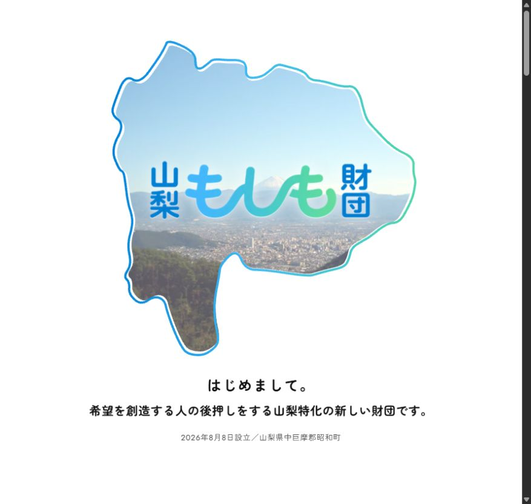

「何をしている人？」に、
ひとことで答えられない。
いくつもの仕事や活動に通っている軸を探し、初めて会う人にも伝わる自己紹介とサービスの言葉を整えます。
WEB DESIGN × DIALOGUE × EDITING
個人で働く人、お店を営む人、地域で動く人へ。
話しながら強みを見つけ、言葉とデザインにする。あなたの仕事を、会う前から伝えられるホームページをつくります。

NAOKI NISHIMURA / PERSONAL WEBSITE
あなたの熱は、想いを聞く。言葉にする。かたちにする。
「つい時間をかけてしまうこと」に、
あなたらしい仕事がある。
01 / BEFORE THE FIRST PAGE
制作の準備は、話すところから。
言葉にするための対話も、ページに載せる文章の編集も、制作の工程に含まれています。
いくつもの仕事や活動に通っている軸を探し、初めて会う人にも伝わる自己紹介とサービスの言葉を整えます。
仕事の具体的な場面を聞きます。手を抜かない工程や、よく頼まれることから、相手が選ぶ理由を探します。
実績、サービス、活動、問い合わせ先を整理。「詳しくはこちら」と安心して渡せる場所にまとめます。
02 / WHY WORK WITH ME
コーチングで学んだ聞き方、編集者としての言葉の整理、エンジニアとしての実装。3つをつなげて、対話の中で見つけたものをページに残します。
今の仕事を始めた理由、嬉しかった依頼、譲れないこと。具体的な経験をたどりながら、本人にとっても納得のいく軸を一緒に見つけます。
見つけるもの：誰に、何を届けたいか
話してくれた内容から、どの実績やエピソードを見せるかを選びます。初めて読む人の疑問に答える順序で、見出しと本文を組み立てます。
整えるもの：選ぶ理由が伝わる言葉と構成
写真、文字の大きさ、余白、問い合わせまでの流れ。聞いた背景をもとにデザインし、スマートフォンでも読み、行動できるページに仕上げます。
つくるもの：あなたの仕事を案内するサイト
03 / FINDING YOUR WORDS
対話と編集のつながりを、架空の例で紹介します。表に出ていなかったこだわりを、読む人に何が届くかという視点で言葉にします。
豆の種類を説明する前に、いつ、どんな気分で飲むのかを聞く。その接客を大切にしているコーヒー店だとしたら。
「こだわりのコーヒー」という紹介から、お客様が店で体験できることへ。接客の写真と選び方の説明を添え、初めて訪れる不安にも応えます。
依頼者と話すうちに、最初に頼まれたもの自体が変わることもある。その工程を大切にする制作者だとしたら。
肩書きに、依頼できるタイミングを加えます。相談から形になった過程を事例として見せると、仕事の頼み方までイメージできます。
開催回数だけでなく、会場で生まれる小さな関係を大切にしている。そんな地域のイベントだとしたら。
運営する側の想いを、参加する人に起こることへ。実際の会場写真、当日の流れ、一人参加への案内を並べます。
実在するお客様の発言・成果ではなく、対話から編集する工程を示したサンプルです。
04 / SELECTED WORKS
コミュニティ、個人の仕事、財団の活動。
紹介する対象が変われば、見せる写真も、伝える順序も変わります。

01 / COMMUNITY WEBSITE
地域で働く人たちの物語と、出会いの場を伝えるサイト。会場の写真からも、活動の雰囲気を届けます。
あなたの熱は、02 / PERSONAL WEBSITE
サイト作成、AI導入、コーチングと地域の活動。「対話と編集」という軸で、仕事の全体像をつなぎます。

03 / FOUNDATION WEBSITE
山梨をかたどった導入画面から、財団の想いと活動を案内。地域とのつながりを感じる入口をつくります。
100人カイギは活動写真、個人サイトは紹介用イメージ、山梨もしも財団は公式トップページのスクリーンショットを掲載しています。
05 / HOW WE MAKE YOUR WEBSITE
初回30分の無料相談で、サイトをつくりたい理由を伺います。その後、制作範囲・費用・スケジュールをご提案します。まずは：今のサイト、SNS、名刺など、あるものから
ヒアリング対話を2回から。仕事の背景を聞き、誰に何を伝えるかを整理します。コンセプトと構成案を一緒に確認します。確認するもの：コンセプト・ページ構成・見出し案
文章を編集し、写真とデザインを組み合わせて実装します。ご自身の言葉として違和感がないか、必要な情報が伝わるかを確認します。確認するもの：原稿・デザイン・スマートフォンの表示
リンクや問い合わせ導線を確認して公開。更新の方法をお伝えし、継続支援をご希望の場合は、その後の言葉や活動の変化も反映します。お渡しするもの：公開サイト・更新方法の案内
06 / WHAT'S INCLUDED
ヒアリング・文章・設計・デザイン・実装をまとめて担当。必要なページ数や機能は、目的と予算に合わせて決めます。
07 / PRICE
料金は税込の目安です。ページ数、写真や原稿の有無、必要な機能を聞いたうえで、着手前にお見積もりします。
FIRST CONVERSATION
無料 ／30分
つくりたいものが曖昧な段階から。
YOUR WEBSITE
15万円〜 ／制作一式
対話から、あなたのサイトをつくる。
GROW WITH YOUR WORK
月1万円〜
公開後の変化をサイトに反映する。
更新・伴走は任意です。撮影、ドメイン、サーバー、有料サービスの利用料などは別途確認します。修正回数・追加機能・公開後の対応範囲は見積もり時にお伝えします。

08 / YOUR EDITOR
哲学対話「ヨムテツ」のファシリテーション、韮崎市100人カイギの運営。地域で人の話を聞くなかで、肩書きだけではわからない仕事の面白さに触れています。
コーチングで学んだ対話の方法を土台に、言葉になる前の想いも聞きたい。そして、元ITエンジニアとして、その言葉を実際に触れられるサイトまで仕上げたい。そう考えて、対話から公開までを担当しています。
西村 直樹編集者・ライター09 / QUESTIONS
はい。対話からコンセプトとコピーを編集する工程が含まれています。いま使っているSNSや名刺などがあれば参考にしながら、必要な言葉を一緒に探します。
お持ちの素材を確認し、使えるものと新しく必要なものを整理します。撮影やロゴ制作などが必要な場合は、その範囲と費用を別途相談して決めます。
ページ数、機能、素材の準備、ご確認の時間によって変わります。希望する公開日を伺い、初回相談後のご提案で工程とスケジュールをお伝えします。
はい。現在のサイトで困っていることと、残したいものを伺います。今の仕組みや契約の状況も確認し、必要な改修の範囲をご提案します。
更新したい内容と頻度を制作前に確認し、運用方法をご提案します。公開時に更新方法をレクチャーします。更新・伴走を依頼する場合は月1万円からの目安です。
支払いとキャンセルの条件は、特定商取引法に基づく表記をご確認ください。個別の制作範囲、納期、修正回数などは着手前に見積もり・契約内容でご案内します。
LET'S FIND YOUR WORDS.
最初の30分は、無料のオンライン相談です。
今あるものと、つくりたいものを一緒に整理します。
個人情報の取り扱いをご確認ください。
18歳未満の方は、保護者の方からご連絡ください。